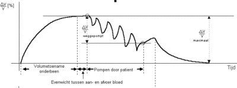
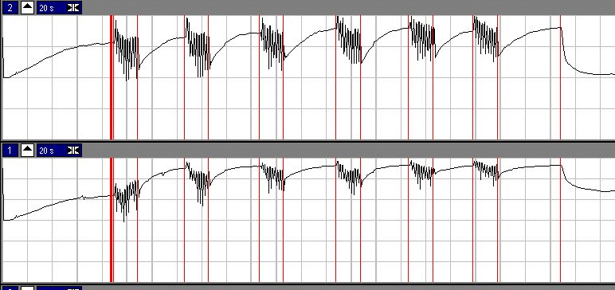

RF 2, Onset Systolische Bloeddruk
|
MIDAC, rekenfunctie 45 |
||
|
Veneuze Pompfunctie Test & Design |
|
td_f45_pompfunctie_analyse.htm |
dit document |
|
de gebruikers documentatie |
|
Met de Veneuze Pomfunctie test wordt de functionaliteit van de bloed-pompfunctie in de benen gemeten, zie verder achtergrond.
Deze functie maakt van een aantal speciale features in Midac gebruik:
De parameters, welke naar de Phytec controler worden gestuurd, worden begrensd op een maximum. Zodoende, gaat er ook bij een foute calibratie van het druksignaal niets ernstigs mis.
De onderstaande maxima zijn ingesteld:
Belangrijk element hierin vormt het eigen besturings form: funk45pu.pas.
Dit popup form neemt de gehele besturing over. Zelf doet het form niet veel meer dan een aantal booleans zetten, welke door de execute method van de funktie funk45.pas worden omgezet in acties. Wel verzorgt het popup form het inlezen en wegschrijven van de (gewijzigde) extra testgegevens.
De execute method bestaat grotendeels uit 2 ineengevlochten state-machines, welke op basis van de booleans gezet door het bedienen van de toetsen in het popup form worden gestuurd.
Er zijn slechts 2 routines die commando's via de seriële poort naar de meet- en regel-electronika sturen:
plet_balanceer
plet_set_druk
State machine tijdens het maken van een opname
|
state |
activiteits venster |
toestands beschrijving de state-teller wordt in de programma-code voorgesteld door de variabele stuw_mode. |
|
101 |
NoodStop |
Bepalen of opname loopt. Even wachten om er zeker van te zijn dat bepaald kan worden of de opname loopt of niet. Vervolgens als de opname niet loopt naar state=102 anders naar state=103 |
|
102 |
NoodStop |
Opname starten en naar state=103 |
|
103 |
NoodStop |
Marker F6 zetten. Wacht tot opname mode daadwerkelijk actief, dan marker F6 genereren en naar state=104 |
|
104 |
NoodStop |
Opname stoppen. Wacht even, dan opname stoppen en naar state=105 |
|
105 |
NoodStop |
Noodstop afgerond. Zet alles weer in de wachtstand en als bezig met drukreeks, naar state=4 anders naar state=5 |
|
0 |
Selecteer |
Wacht tot drukreeks geselecteerd en op start gedrukt, dan (De volgende keren in deze toestand wordt een enkelvoudige druk overgehaald.) dan drukreeks overhalen naar lijst en naar state=1 |
|
1 |
Tijdelijke tussenstand, bepaalt of er nog drukken in de lijst staan, zoniet dan naar state=0 zoja dan start het vullen en naar state=2 |
|
|
2 |
Vullen |
Wacht totdat starttoets ingedrukt en dan opname starten met marker F1 en naar state=21 (als druk-volume meetpunt) of naar state=71 (als pomp meetpunt) |
|
71 |
Aanloop |
Aanloop voor de pompbeweging Opnemen van een kort stukje voor start pomp-beweging, De grote seconde teller start op -2 en begint te lopen, er is nog geen seconde piep Als 2 seconde is verstreken, dan naar state=72 |
|
72 |
Pompen |
Het pompen, seconden teller begint hier op 0 en loopt tot 20, iedere seconde een piep, als klaar naar state=73 |
|
73 |
Einddruk |
Nog 2 seconde opnemen (druk en volume na het pompen), dan opname stoppen en naar state=74 |
|
74 |
Afsluiten van 1 meetpunt. (tijdelijke tussenstand) meetpunt afvinken in de tabel, als bezig met drukreeks, naar state=4 anders naar state=5, tenzij maximaal aantal meetpunten overschreden, dan naar state=6 |
|
|
21 |
Legen |
Opnemen van een kort stukje voor het openen van de cuffs. Als tijd time_pre verstreken, dan marker F2 zetten en druk van de cuffs halen en naar state=3 |
|
3 |
Legen |
Opnemen van het VER stukje. Wacht totdat opname lang genoeg, dan opname stoppen en naar state=31 |
|
31 |
Legen |
Wacht voor opnemen nul-volume Als starttoets (nadat de opname daadwerkelijk is gestopt door state=3), dan opname starten met marker F3 en naar state=32 |
|
32 |
Nul-Volume |
Afsluiten van 1 meetpunt. Wacht tot voldoende meetpunten voor het nul-volume en dan opgemeten druk afvinken in de tabel, opname stoppen en als bezig met drukreeks, naar state=4 anders naar state=5 |
|
4 |
Volgende |
Wacht op indrukken starttoets voor het opnemen van de volgende (nog niet afgenomen) druk in de lijst als starttoets, dan naar state=1 |
|
5 |
Volgende |
Wacht op het selecteren van een enkelvoudige druk. als starttoets, dan enkelvoudige druk overhalen naar lijst en naar state=1 |
|
6 |
Niet bestaande toestand, hier wordt de state machine naar toe gestuurd als het maximaal aantal drukken is opgenomen |
|
|
 |
|
|
Schematische weergave van een volledige pomp-manouvre |
Meting: het relatieve volume tijdens de pompbeweging |

In bovenstaande figuur worden beide benen gelijktijdig gemeten. Er zijn 6 pomp-manouvres te zien, respectievelijk bij een cuf-druk van 50, 50, 60, 60, 70, 70 mmHg.
In de onderste signaal is te zien dat bij de eerste pompbeweging, het volume stijgt, dit is te wijten aan het verschuiven van het "kwiktouwtje". Aan het eind van de meetsessie is namelijk te zien dat het volume niet meer op de oorspronkelijke waarde terugkomt.
Dus het is belangrijk om tijdens de metingen te kunnen constateren dat het "kwiktouwtje" niet verschuift. De beste manier om dit te constateren is de druk van de cuf te nemen en het nul-volume te meten. Waarschijnlijk wordt dit niet gedaan om de meting dan te lang zou duren. Wel wordt aan het eind van de meetcyclus gemeten wat het relatieve nul-druk volume is.
Dus er moet een andere manier gevonden worden om de validiteit van de meting te controleren.
Zoals onderstaand voorbeeld aangeeft, is de huidige methode niet juist.
|
De relatieve volume-verandering van een laatste pompslag is weergegeven in de onderste curve. Het resulterende meetpunt in de druk-volume relatie wordt aangegeven door het open vierkantje. Kijkend naar de onderste curve, is men geneigd te denken dat de rode lijn (welke het relatieve eindvolume aangeeft) te hoog is geplaatst. Dit zou kunnen verklaren waarom het open vierkantje boven de druk-volume vurve komt te liggen, waardoor een schijnbaar negatief volume wordt weggepompt. Verschuift men de rode lijn, (enkel kijkend naar de onderste curve), dan zal het open vierkantje onder de druk-volume curve terecht komen en dus een "normaal" positief weggepompt volume tonen. Dit is echter complete nonsense, het betreft immers een verschoven "kwiktouwtje", hetgeen alleen in de totale opname zichtbaar is. Dus bij de beoordeling van de pompfunctie moet meer worden weergegeven. Gedacht wordt aan - het relatieve begin volume (gemiddeld over een aantal samples) - de gehele pompbeweging laag gesampeld of minstens de toppen - de laatste pompslag (zoals nu ook wordt weergegeven) |
|
Hoe komt men in hemelsnaam aan die (7) meetpunten van de druk-volume relatie ??
Zo ziet het analysescherm van de pompfunctie er nu uit
Rechtsboven zitten aankruisvakjes waarmee de vertikale as van de grafiek kan worden ingesteld.
De meetpunten van de druk-volume relatie zijn de ronde bolletjes. De geaccepteerde meetpunten zijn rood ingekleurd (zwart op de printer), niet geaccepteerde punten zijn open. De rode lijn geeft de druk-volume relatie weer, en is berekend door een fit volgens de Levenberg-Marquadt benadering.
Het aan-/uitzetten van specifieke meetpunten kan op 2 manieren gebeuren, door op het desbetreffende meetpunt in de grafiek te klikken met de muis, door op het corresponderende punt in de meettabel te klikken.
De meetpunten van het pompvolume worden aangegeven door de vierkantjes. Geaccepteerde meetpunten zijn groen ingekleurd, niet geaccepteerde meetpunten zijn open. Het aan- en uitzetten van deze meetpunten gaat eveneens door klikken op het meetpunt, danwel op de corresponderende waarde in de tabel.
Nu komen de vraagtekens bij mij opzetten !!!
Eerste probleem
Volgens pagina 13 van het verslag van Ties, is men niet geïnteresseerd in het weggepompte volume maar in de weggewerkte druk.
Als dat zo is, verwacht geen vertikaal wit lijntje maar een horizontaal wit lijntje !!!
Tweede probleem
De veneuze druk is lager dan de cuf-druk. Afhankelijk van de beenomvang en van de samenstelling van de weefsels (beoordeling op grond van ervaring), moet een correctie-factor kleiner dan 1 worden ingevoerd. Indien beide benen niet gelijk zijn, kan daarom een verschillende correctie factor voor links en rechts worden ingevoerd. Hardstikke leuk, maar de tabellen vermelden slechts 1 drukwaarde, voor zowel links als rechts. !!! ???
Derde probleem
In de drukverval tabel wordt de gecorrigeerde druk vermeld, in de totaal tabel wordt de ongecorrigeerde druk vermeld, terwijl het een middeling over twee pomp-meetpunten betreft. Zeer verwarrend dus, en dat brengt me bij het vierde probleem:
Vierde probleem
Waarom wordt de druk in de druk-volume relatie niet gecorrigeerd, daar geldt toch ook veneuze druk is lager dan manchet-druk ??
Vijfde probleem
Bij de laatste meetpunten stemmen de tabel-waarde en de grafiek niet overeen, dat is mijn probleem
Zoektermen internet
calf muscle pump , phlebology , strain gauge plethysmography , CMP , SVPT

© Copyright Instrumentele Dienst, 1999
 SM, last updated 28-08-1999
SM, last updated 28-08-1999